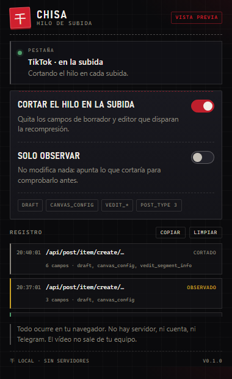

Observar
No modifica nada. Apunta en el registro qué campos cortaría en cada subida. Es el modo por defecto y el primer paso.
por defectoextensión · navegador · local
TikTok decide si tu vídeo pasa por su editor en la nube —y por tanto si lo recomprime— mirando el JSON que la web envía al publicar. Chisa limpia ese JSON en memoria, justo antes de que salga. El vídeo no se toca y no sale de tu equipo.

Baja el zip y suéltalo en una carpeta que no vayas a borrar. La extensión se queda ahí: no hay instalador.
edge://extensions
En Chrome es chrome://extensions. Activa Modo de desarrollador, arriba a la derecha.
Elige la carpeta chisa-ext. Fíjala en la barra y ya está: se activa al recargar TikTok.
Solo el cuerpo JSON de la petición de subida. Nada de vídeo, bitrate, resolución ni códec.
| Campo | Qué hace |
|---|---|
draft | quita el borrador que arrastra el editor |
canvas_config | quita la configuración del lienzo en la nube |
vedit_segment_info · vedit_project · edit_common_info | quita metadatos del editor de vídeo |
cloud_edit_is_use_video_canvas | se fuerza a false |
post_type | si vale 2, pasa a 3 |
vedit_common_info · feature_common_info_list | se limpian en profundidad |
Solo actúa en peticiones del mismo origen o de *.tiktok.com, y
solo si el cuerpo es JSON con alguna de esas claves. Un JSON cualquiera de
la página se queda intacto. Si algo falla, se envía el original: nunca
rompe la subida.
No modifica nada. Apunta en el registro qué campos cortaría en cada subida. Es el modo por defecto y el primer paso.
por defectoAplica las reglas al cuerpo real. El registro marca cada entrada como cortado y guarda las rutas exactas que se quitaron.
cuando ya lo entiendes
Si una subida aparece como visto · sin cambios, TikTok cambió el
payload o usa multipart: el registro dirá qué se está viendo y las reglas
están en page.js.
multipart/form-data ni firmados.Ojo. Manipular el payload de subida va contra los términos de TikTok y puede costar la cuenta. Empieza con una cuenta de prueba y el modo observar. Sin probar todavía contra una subida real: el motor está verificado, el efecto final hay que medirlo.